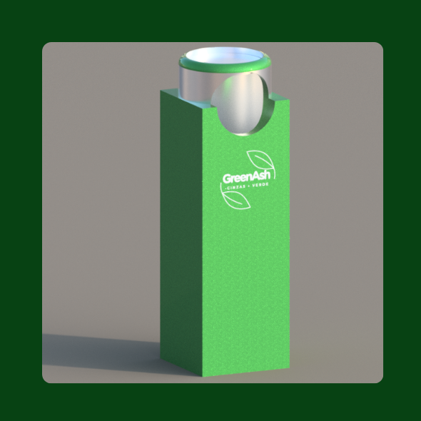

Quem somos?
Você já passou pelas ruas e reparou na quantidade de bitucas de cigarro pelo chão? No canto da rua, na calçada, as bitucas estão por todos os lugares.
Provavelmente você não sabe mas, segundo a OMS existem mais de 1 bilhão de fumantes no mundo, e cada um deles descarta cerca de 7 bitucas por dia, gerando ao todo mais de 12 bilhões de bitucas de cigarro descartadas inadequadamente todos os dias. Pensando nisso, a GrenAsh desenvolveu coletoras automatizadas para a realizar a logística reversa das bitucas de cigarro.
